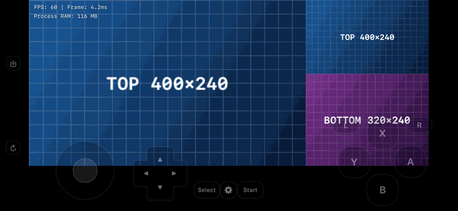
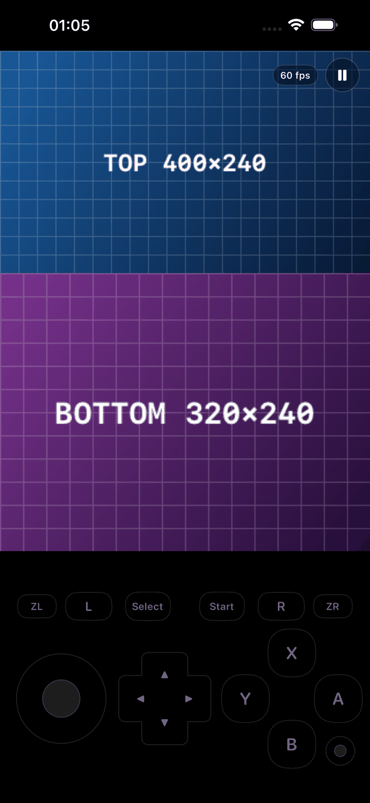
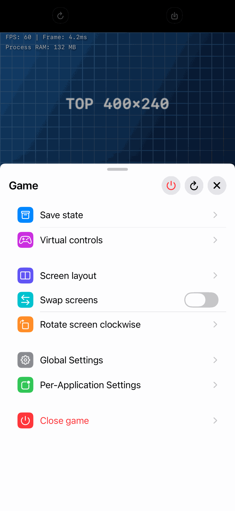
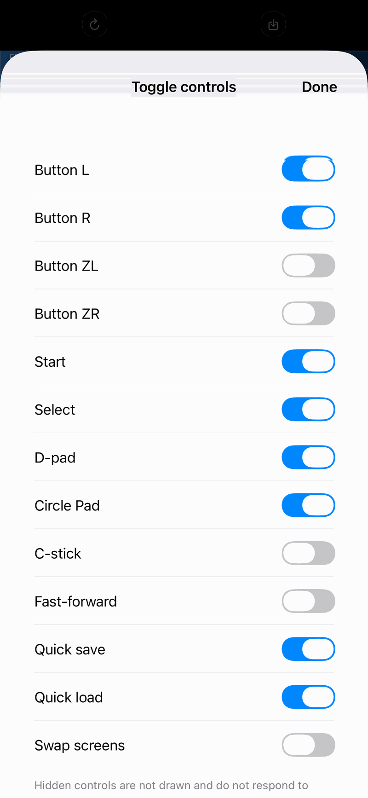
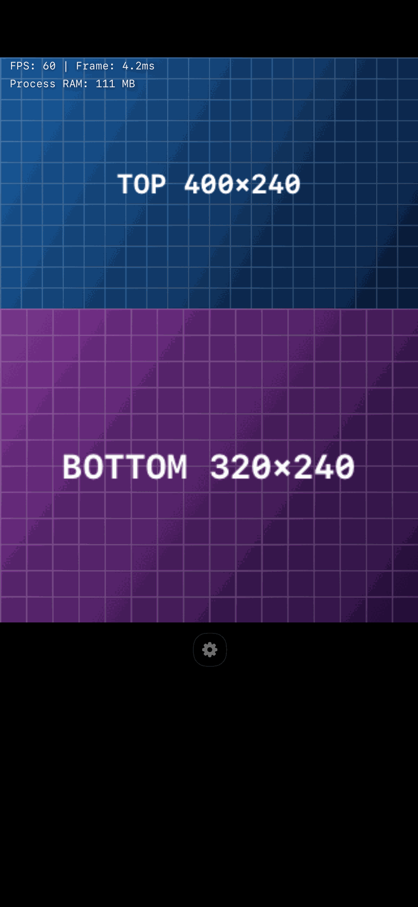

Game code is recompiled ahead of time to native ARM64 and runs directly on the phone processor — Metal through MoltenVK, with no CPU JIT and no interpreter fallback. The Windows, macOS or Linux launcher compiles, signs, installs and pushes; the Linux build ships its own local AOT toolchain (3dsrecomp + LLVM/LLD 23.1.6). One app holds your whole library.
0.2.1 synthetic preview — topology grids and control labels only; no game data. Animated slideshow (5 s loop).
Download · v0.3.1
Three platform packages, published on GitHub Releases.
The Windows and macOS zips carry LICENSE, NOTICE and THIRD_PARTY.md at their root; the Linux tar carries the same texts inside the launcher folder. No game data is ever attached to a release.
Windows launcher
Verified path
3ds2apple-0.3.1-windows-x64.zip
version 0.3.1size 158,634,308 B (158.6 MB)Windows 10/11 x64
One self-contained 3ds2apple-launcher.exe that builds, signs, installs and pushes without a Mac. The executable is not code-signed: check the digest below, then choose More info → Run anyway.
SHA-256 digestccaffdafab9dadaba8b46a5c9f80e5223180a7aaee28f17889528a3fa3ad5dd1Download for Windows
macOS launcher
Developer preview
3ds2apple-0.3.1-macos-universal.zip
version 0.3.1size 5,878,815 B (5.88 MB)macOS 13+, Intel + Apple silicon
Not notarised: right-click → Open on first launch. The package is not self-contained yet (Xcode, a checkout and built tools are required) and real-device installation is not verified by the maintainers — tracked in issue #1.
SHA-256 digestd8c9ec6f94f00942e99b235e9cdfa928a8b9599736d8e9bdd9ca736dd2b4c69cDownload for macOS
Linux launcher
Verified path
3ds2apple-0.3.1-linux-x86_64.tar.gz
version 0.3.1size 253,441,954 B (253.4 MB)x86_64 Linux
Shares the Windows launcher's UI and engine. The payload bundles a local AOT toolchain (3dsrecomp + clang/LLD 23.1.6), so Linux builds GamePacks itself; it also imports .32a packages and reuses their build cache. Signing/installing uses the bundled official plumesign-linux over USB with usbmuxd.
SHA-256 digestc53407bfcc34e53ec5be1d0e43b3a0a94bef718582efa6e4e57b46586623baeeDownload for Linux
Verify a download against these digests
GitHub shows the SHA-256 of every asset on the release page. Compute it locally and compare:
# Windows (PowerShell)
Get-FileHash .\3ds2apple-0.3.1-windows-x64.zip -Algorithm SHA256
# macOS
shasum -a 256 3ds2apple-0.3.1-macos-universal.zip
# Linux
sha256sum 3ds2apple-0.3.1-linux-x86_64.tar.gz
Why native
A native port, not an emulator.
A general emulator ships a CPU emulator and interprets game code. 3ds2apple recompiles each game once on your own computer, then runs that native ARM64 code directly on the phone.
01
Your own ROM
Import a decrypted .3ds/.cci that you own and dumped yourself. Only the ROM header and SMDH metadata are read.
02
3dsrecomp → C
Static recompilation translates the game's code ahead of time on the host; generated code is never committed or shared.
03
ARM64 GamePack
A local LLVM/LLD (Windows), Apple clang (macOS) or bundled 3dsrecomp + LLVM/LLD 23.1.6 (Linux) toolchain builds a GamePack, and the launcher composes a ROM-free base IPA.
04
Metal via MoltenVK
The PICA200 GPU path is translated to Metal; the GPU presenter draws every screen layout — presets and custom rectangles — with zero per-frame readback.
No CPU JIT. No interpreter fallback.
The shipping path is AOT code plus the Zakuro HLE runtime. iOS never executes JIT-compiled game code.
One app, your whole library.
Every selected game becomes its own GamePack inside one signed app with a GameCatalog.json. Add or remove games by deploying again.
No trackers, no network calls.
The app makes no network requests and collects nothing. Diagnostics are exported manually from the pause menu.
Features
The full feature set.
Full-bleed play, a complete New 3DS control set, GPU-drawn screen layouts, your own cheat files, a full gamepad layer and launchers that handle the whole pipeline.
Full-bleed picture
No title bar, card border or game name. Only the performance overlay and your floating controls sit over the picture, with the always-visible Settings button in the HOME slot as the only in-game menu entry; the menu itself uses the same iOS grouped language with native push/pop sub-pages.
Whole library, one app
Each game is a GamePack; the catalog and the pushed game data travel together. Pushed data survives reinstalls.
Full New 3DS controls
D-pad, A/B/X/Y, L/R, ZL/ZR, Start/Select, a true analog Circle Pad and the New 3DS C-stick — with hardware-controller mapping and a default layout from two Delta reference skins (ModernFS portrait, ModernHybrid landscape) whose HOME slot is the always-visible Settings button. Gamepad support adds an analog deadzone, physical button remapping, 2–4 button hotkeys, Standard / High contrast controls and per-app profiles.
6 + 3 screen layouts
Six landscape and three portrait presets plus arbitrary custom rectangles, set independently and drawn by the GPU presenter with zero per-frame readback; in landscape, Large screen, Side by side and Hybrid sit flush to the top edge.
Edit the pad in place
Pause → Virtual controls → Edit layout: drag each control over the paused picture, tap the centred Done to save and resume. The editor runs full-screen with one stationary canvas and commits once on release.
Save states + diagnostics
Save and load from the pause menu or the on-screen Quick save / Quick load buttons, and export a diagnostics report with frame timings, stutter counters and logs.
Performance overlay at the top edge
An Azahar-style overlay sits at the very top edge of the picture: frame rate, frame time, speed, app memory and available memory, each line switchable, six positions and an optional background.
GPU path for every layout
Hybrid, LargeTopRight and Full width add presenter arrangements, and custom rectangles now run on the same GPU path — with rotation and screen swap.
Grouped Settings and the in-game menu
Settings uses the iOS 26/27 inset-grouped pages — General, System, Gamepad, Cheats, Graphics, Layout, Sound, Debug and Other — with two-line descriptions, and the in-game menu is built in the same language with native push/pop sub-pages.
Gamepad layer and per-app settings
A physical controller gets an analog deadzone, button remapping, 2–4 button hotkeys, Standard / High contrast on-screen controls and per-app Gamepad profiles. Per-Application Settings override screen rotation and swap, Integer scaling, Screen aspect, deadzone, control appearance and button mapping per title.
Your own cheat codes
Bring Citra/Azahar cheat text files: Settings → Cheats imports, edits, toggles and exports a game's file while the in-game menu's Cheats page switches codes on the fly. No database is bundled or downloaded, and only data patches are supported.
Portable builds and single-game IPA
One Export dialog writes a portable .32a build package or an unsigned, self-contained single-game IPA; Import accepts ROMs and .32a packages (with build-cache reuse) and the Settings page tunes the AOT options. Refresh signing renews a free-Apple-ID signature without rebuilding.
Speed, update channels and saves
Default and Turbo speed run 1×–4× with an unlimited option, Stable/Beta update channels check GitHub in the background (at most once a day, with a local notification), and the Save Manager exports/imports battery saves as ZIP alongside three save-state slots per game.
Screen layouts
Six landscape, three portrait.
Settings → Display → Screen layout keeps both directions independent. Every arrangement — preset or custom rectangle — is drawn by the GPU presenter, with rotation and screen swap supported.
Landscape 6 presets
Chosen separately from portrait. In landscape, Large screen, Side by side and Hybrid sit flush to the top edge — the black band above the picture is gone — and Custom layouts are edited by percentage fields or by dragging, with a live preview. Single screen, Original and Custom layout complete the six presets on the same GPU path.
Large screen Preset · GPU
One large top screen with the bottom screen beside it, flush to the top edge.
Side by side Preset · GPU
Top and bottom screens side by side, both fully visible and flush to the top edge.

Hybrid Preset · GPU
One large top screen with two small screens stacked beside it, flush to the top edge.
Portrait 3 presets
Portrait keeps the whole control set in the empty band below the picture, so the screens are never covered; the default portrait view and its HOME-slot Settings button are shown in the controls section above.
Screen rotation and orientation are kept, and custom layouts now rotate and swap with the GPU presenter. If no GPU presenter can be created, the app falls back to the screen-readback path. Render resolution (1x–4x) still applies on the next game load; Integer scaling and Screen aspect (Fit / 4:3 / Stretch) are under Settings → Graphics, and the renderer is selected automatically (the old read-only Renderer row is no longer shown).
Controls
Full 3DS controls, on screen.
The on-screen pad is the complete New 3DS set, with real analog sticks and per-control customisation from the pause menu. The default layout follows two Delta reference skins (ModernFS in portrait, ModernHybrid in landscape) and keeps the Settings button visible even with the pad hidden; Fast-forward, Quick save, Quick load and Swap screens are editable on-screen buttons.

Portrait — the whole pad sits below the picture.

Pause menu — the 0.2.1 in-game menu and its Virtual controls card.
Complete New 3DS set
True analog Circle PadReports −1…1 per axis with a small dead zone, so a resting finger reads exactly 0 — not a second D-pad.
New 3DS C-stickWorks the same way as the Circle Pad. It needs a game that reads the New 3DS nub and a shell built with the current runtime. Hidden by default — turn it on in Toggle controls for games that read the nub.
Single-cross D-padOne cross-shaped control: four direction zones, press and slide to change direction, haptic feedback on pickup.
Every buttonA/B/X/Y, L/R, ZL/ZR, Start/Select. A hardware controller's left stick feeds the Circle Pad, right stick the C-stick, and L2/R2 map to ZL/ZR; an analog deadzone, physical button remapping, 2–4 button hotkeys, Standard / High contrast on-screen controls and per-app Gamepad profiles are configurable.
Multitouch + hapticsSeveral fingers can hold buttons and drag the sticks at the same time; touch feedback is switchable.
Action buttonsFast-forward (2× toggle), Quick save, Quick load and Swap screens are editable rows in Toggle controls and Adjust size.
Pause menu → Virtual controls
Show or hide the pad, toggle the performance overlay, edit the layout in place, toggle individual controls, resize each button or group from 10% to 200%, adjust opacity and reset to the defaults. With the pad hidden every virtual control disappears except the always-visible Settings button, which keeps opening the in-game menu. Toggle controls no longer lists Settings and Adjust size still resizes it; the default hidden set is ZL, ZR, the C-stick, Fast-forward and Swap screens.

Toggle controls · Settings excludedAdjust size · Settings included

Pad off · Settings only
Screens
Launchers and settings.
The 0.3.1 Windows, macOS and Linux launchers, plus the app's own Settings screens. Launcher captures use the built-in synthetic demo entries or empty libraries (headless mock/harness states are captioned); app screenshots are synthetic previews or Settings-only device captures — no game data is depicted.
The full instructions — including troubleshooting and the phone data layout — live in the README. This is the short version.
You need: a decrypted 3DS ROM that you own and dumped yourself, an iPhone/iPad on iOS 16+ with Developer Mode enabled, a USB cable and your own Apple ID for signing. No game data, keys or BIOS are included.
Windows
Verified path
Download and extract 3ds2apple-<version>-windows-x64.zip into a writable folder (not Program Files). Install Apple Devices so the phone is reachable over USB.
Run 3ds2apple-launcher.exe. It is not code-signed: check the digest, then More info → Run anyway. Run Settings → self-test once and expect it green.
Library → Import your own decrypted .3ds/.cci. Only the ROM header and SMDH icon/metadata are read.
Select games and press Deploy: GamePacks compile, a ROM-free IPA is signed and installed with the bundled Impactor (your Apple ID), then only the game data is pushed. The launcher reads the phone first and updates incrementally; an overwrite install keeps Documents and saves, and game data that exists only on the phone is never deleted.
Open the app and play. Deploy again to add or remove games; a clean uninstall clears the pushed data.
macOS
Preview
Download 3ds2apple-<version>-macos-universal.zip: you get 3ds2apple-launcher.app (not notarised — right-click → Open on first launch).
The package is not self-contained yet: it needs macOS 13+, Xcode 15+ with your Apple ID, xcodegen, a repository checkout and the built tools.
Import → Deploy: Apple clang compiles the GamePacks, Xcode automatic signing + devicectl installs the composed IPA, and the launcher pushes the game data.
macOS real-device installation is not verified by the maintainers yet — tracked in issue #1. The Windows and Linux packages are the verified paths.
Linux
Verified path
Download 3ds2apple-0.3.1-linux-x86_64.tar.gz from the release and extract it into a writable folder (x86_64 Linux with X11 or Wayland and usbmuxd). The payload includes the local AOT toolchain (3dsrecomp + clang/LLD 23.1.6).
Import your own decrypted ROM and build its GamePack locally with the bundled toolchain, or import a prepared Finished build package (.32a) and reuse its GamePack/build cache. Connect the phone by USB, unlock it and trust the computer.
Sign in with Settings → Sign in with plumesign (your Apple ID and 2FA stay in that terminal), then press Deploy: the launcher compiles the GamePack, composes the IPA, signs and overwrite-installs with the bundled plumesign-linux and pushes the game data through devpush. Refresh signing renews the 7-day signature without rebuilding.
Linux builds GamePacks locally with the bundled 3dsrecomp + LLVM/LLD 23.1.6 toolchain; it also deploys imported .32a packages.
Free Apple ID: 3 apps per device and about 7 days of signing — deploy again to refresh. A paid developer account removes those limits. Game data lives in Documents/Games/<TITLEID>/; saves and save states live in the app container. A re-deploy or an overwrite update keeps them; a clean uninstall removes them. Your ROMs on the computer are never touched.
FAQ
Questions people actually ask.
Is 3ds2apple an emulator?
No. It is a native port: each game's code is statically recompiled to C on your computer, built into an ARM64 GamePack, and executed natively through the Zakuro HLE runtime. There is no CPU emulator, no CPU JIT and no interpreter fallback.
Do I need a jailbreak?
No. You sign the composed app with your own Apple ID: on Windows through the bundled official Impactor, on macOS through Xcode automatic signing, on Linux through the bundled official plumesign-linux. The phone needs Developer Mode enabled and a USB connection. A free Apple ID allows 3 apps per device and about 7 days of signing; re-deploy to refresh.
Where do the games come from?
Only from you. 3ds2apple ships no games, no ROMs, no decryption keys, no BIOS or system files, and provides no download links or piracy support. Import a decrypted ROM that you legally own and dumped yourself; only the ROM header and SMDH metadata are read.
Does every game work?
No. Compatibility is per title and there are no compatibility or performance guarantees. Some games may fail to boot or render incorrectly — a few menus in some titles can still show corrupted graphics (issue #2). A compatibility report with the title ID helps.
Can I use my own cheat codes?
Yes. Settings → Cheats imports, edits, toggles and exports your own Citra/Azahar cheat text files for each title, and the in-game menu's Cheats page switches them while you play. The app bundles no cheat database and downloads none, and only data patches are supported — codes that rewrite the game's code can slow an AOT build down.
How do updates work?
Settings → General has a Stable/Beta update channel and a Check for updates row; background checks run at most once every 24 hours and post a local notification when a new release appears. The launcher renews the 7-day signature in place, and a new app build is installed with one Deploy that keeps Documents and saves.
Why is there no CPU JIT?
iOS does not allow JIT-compiled executable memory, and the project intentionally keeps the shipping path AOT: native ARM64 code produced on the host, then Metal for graphics. If an interpreter is detected the app refuses to start. Settings → Debug shows the AOT state, coverage and interpreted/fallback counts, and the diagnostics export carries the same.
What exactly does the launcher do?
It reads your ROM's header and SMDH metadata, compiles one GamePack per selected game with a local LLVM or Apple clang toolchain, composes a ROM-free base IPA with a GameCatalog, signs and installs it with your Apple ID, then pushes only GameRom.cci and GameInfo.json into the app's Documents folder. On Windows the deploy is device-aware: it checks the installed app version and game data first, so an update overwrite-installs without losing Documents or saves and only pushes what is missing. The Linux launcher shares the UI and engine and follows the same path: its payload bundles 3dsrecomp + LLVM/LLD 23.1.6, so it compiles a GamePack from your ROM on Linux and signs/installs with plumesign-linux; importing a prepared .32a package and reusing its GamePack/build cache is an alternative.
Is the macOS launcher ready?
It is a developer preview. The package is not self-contained (it needs Xcode, a checkout and the built tools) and real-device installation has not been verified by the maintainers yet — issue #1 tracks acceptance. The Windows and Linux launchers are the verified paths.
Is there a Linux launcher?
Yes — a Linux x86_64 GUI launcher that shares the Windows launcher's UI and engine. It imports ROMs and .32a packages, reuses a matching package's build cache, signs and overwrite-installs with the bundled official plumesign-linux over USB (usbmuxd; your Apple ID and 2FA stay in the terminal), pushes game data through devpush and renews the 7-day signature with Refresh signing. The payload also bundles a local AOT toolchain (3dsrecomp + clang/LLD 23.1.6), so it builds GamePacks on Linux; a .32a package built elsewhere can be imported too and reuses its build cache.
Does the app phone home or collect data?
No. It makes no network requests and collects nothing; diagnostics are exported manually through the share sheet. On a mainland-China iPhone, iOS can still show its "allow wireless data" alert on the first text input — a known system quirk. Choose Don't Allow (or Wi-Fi only) and everything keeps working; reinstall can show it again.
Where are saves and game data stored?
Pushed game data lives in Documents/Games/<TITLEID>/ and is visible in the Files app. Saves and save states live in the app container. A re-deploy or an overwrite update keeps them; a clean uninstall removes the app's data, and your ROMs on the computer are never touched. Diagnostics exports are written to Documents/Diagnostics/ (last five kept).
How do I update from an older version?
Deploy again with the current launcher. On Windows the launcher detects the installed app and games and updates incrementally — the app is never uninstalled, so Documents and saves survive, and phone-only game data is never deleted. On macOS, run the same import → deploy flow as before. On Linux, deploy again the same way: an overwrite install keeps Documents and saves, and Refresh signing renews the 7-day signature.
How can I help?
Compatibility reports, build reports and pull requests are welcome — start with CONTRIBUTING.md, open a GitHub issue or join Discussions. Never attach ROMs, keys, BIOS, generated C, signed IPAs or screenshots that contain game art.
Honest limits
What does not work perfectly yet.
These are known and tracked. Treat compatibility and performance as per game.
Some menus can render incorrectly
In a few titles, certain menu screens can show corrupted graphics on the top screen. The diagnostics path has been examined but the fix is still under investigation — issue #2.
macOS is a developer preview
The macOS launcher is not self-contained yet and its real-device install is unverified — issue #1. Windows and Linux are the verified paths.
The Linux launcher is newer
It builds GamePacks locally with the bundled 3dsrecomp + LLVM/LLD 23.1.6, signs/installs with plumesign-linux and pushes through usbmuxd/devpush, and imported .32a packages reuse their build cache. It has had less real-device exposure than the Windows path — report issues on the tracker.
The C-stick depends on the game
It is reported through the New 3DS nub API; a title that never reads the nub ignores it, and a shell built with an older runtime does not provide it. It is hidden by default — enable it in Toggle controls when a game uses the nub.
No compatibility or performance promises
Some titles may fail to boot or run slowly. The reference numbers in the README come from the maintainers testing specific titles — they are not a guarantee.
Not yet included
Delta-style skin import, a bundled cheat database, a game manual viewer, amiibo, microphone, camera and network/online features are not included — they need emulator-core work. CPU JIT, shader JIT, RPC and LLE module settings do not apply to the AOT-only architecture.
Legal boundaries
No ROMs, keys, BIOS, system files or game assets are provided, and there is no piracy support. Use only games you legally own and dump yourself. 3ds2apple is not affiliated with Nintendo.
Bring your own games.
3ds2apple is available now for Windows, macOS and Linux. Read the README for the full guide, the diagnostics workflow and the complete list of limits.